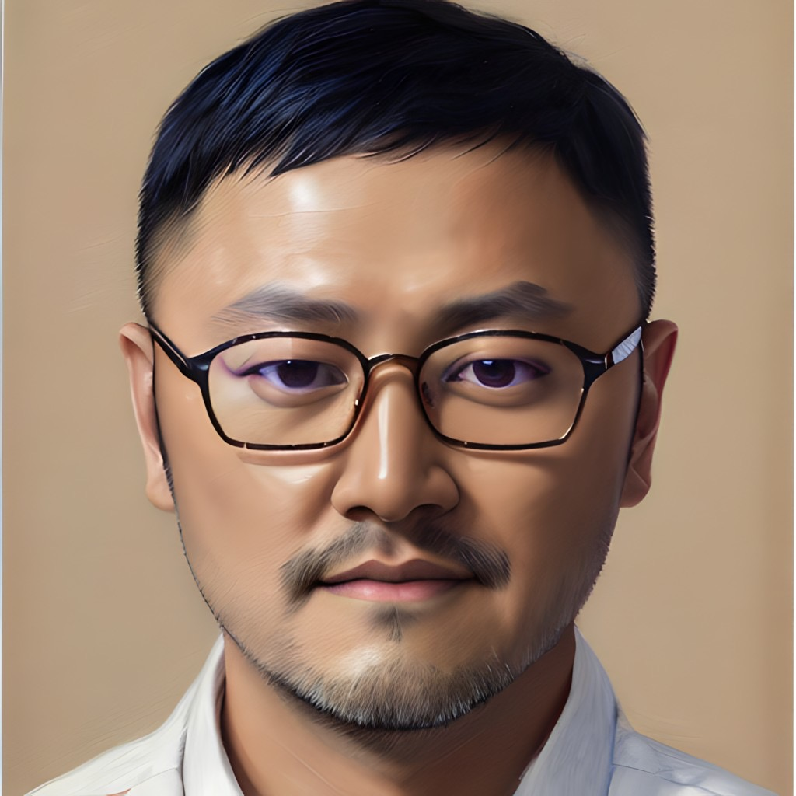

Introduce This Website

Welcome! Visitor,
Thanks for your coming to this website. My name is Kevin.
I am from Taiwan, and I have lived in San Francisco since 2019.
I am studying at City College of San Francisco because I want to learn new skills and get certifications.
This website is a display of achievements because I am studying HTML technologies.
This website uses HTML, CSS, and Javascript, and recommend using Chrome browser.
If you open this website to meet any problem, you can contact me directly. Thanks.